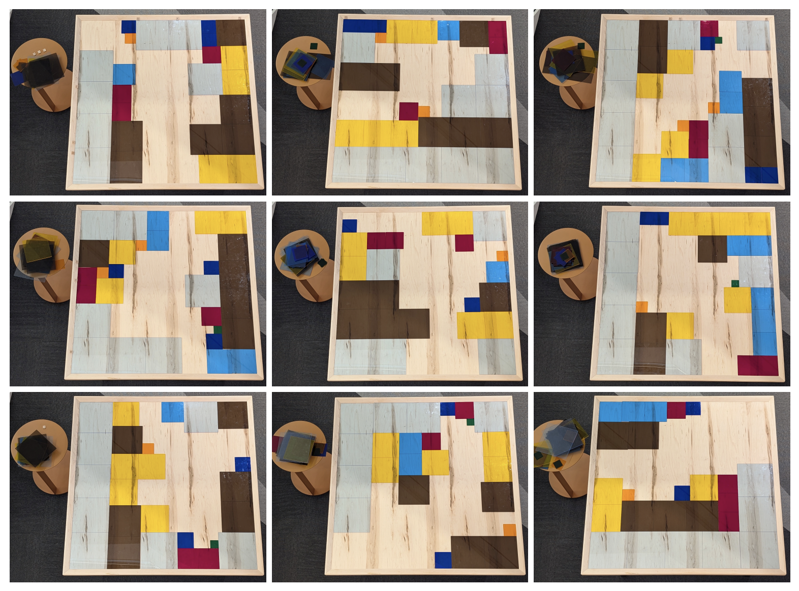
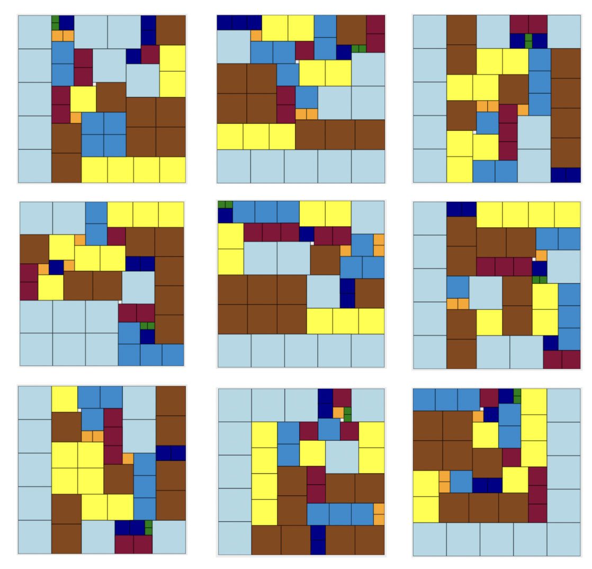

We are given zero instructions other than the image below and that the format of the answer is a sentence.

Puzzle link here.
We are given zero instructions other than the image below and that the format of the answer is a sentence.

Puzzle link here.
An incredibly strange puzzle that ended up being one of my favourites!
Inspecting each of the nine partially filled in puzzles and the pieces on the side table showed that there were $9$ of the largest light blue tiles, $8$ of the second largest brown tiles, $7$ of the third largest yellow tiles, $6$, $5$, and so down to $2$ of the smallest green tiles. If we say the smallest green tile is $2$ units long, then the length of the board is $45$ units with a total area of $2025$ units squared, but the area of all tiles combined gives only $2024$ units squared. There is one unit missing, and given the suggestive nature of the title of the puzzle, it seemed to reasonable we had to solve the nine partially filled in puzzles.
To aid in this process, I made a little interactive puzzle for the board so I could build them very easily. You can check out the tool HERE. After some time, the nine completed puzzles are shown below:

Looking at the scrabble letters for the top left picture, for example, if row $1$ was A, then row $2$ was B, then column $20$ would be a T, like it is, and then the I and the L match up for $35$ and $38$, respectively if the alphabet restarts at row $27$. So then the row of the empty tile missing is 19, corresponding to an “S”. Then for the columns, the first column is A again and so on, making the column of the empty tile a “U”.
Then for the second picture (top middle), the row letters stay the same (just keeping the row letters from the top left picture because the rows line up), but the column letters are different, starting the alphabet at T instead for column $1$. This makes the row letter for the empty tile “M” and the column letter “O”. This is continued for the other pictures, getting, in all, for row, column notation as with matrices:
$$(S,U),(M,O),(F,C),(U,B),(E,S),(I,S),(\_,Q),(\_,A),(\_,E)$$With the blanks because there were no letters for rows of the bottom three pictures.
Adding in the “THE” and the “A” from the tables in the correct spots and using the thematic idea so far of the $9$ $9\times 9$ tiles $+$ the $8$ $8\times 8$ tiles $+\cdots +$ the $2$ $2\times 2$ tiles $+$ the $1$ missing tile we have the sum of cubes ($9^3 + 8^3 +\cdots + 1^3) = 2025 = 45^2$, or:
$$\boxed{\text{the sum of cubes is a square}}$$